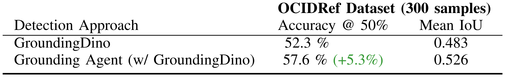

Out-off-distribution Generalization

GRAPPA guides the base policy for out-of-distribution cases. The task involves grasping a deformable toy ball and placing it inside a box.

Robot learning approaches such as behavior cloning and reinforcement learning have shown great promise in synthesizing robot skills from human demonstrations in specific environments. However, these approaches often require task-specific demonstrations or designing complex simulation environments, which limits the development of generalizable and robust policies for unseen real-world settings. Recent advances in the use of foundation models for robotics (e.g., LLMs, VLMs) have shown great potential in enabling systems to understand the semantics in the world from large-scale internet data. However, it remains an open challenge to use this knowledge to enable robotic systems to understand the underlying dynamics of the world, to generalize policies across different tasks, and to adapt policies to new environments. To alleviate these limitations, we propose an agentic framework for robot self-guidance and self-improvement, which consists of a set of role-specialized conversational agents, such as a high-level advisor, a grounding agent, a monitoring agent, and a robotic agent. Our framework iteratively grounds a base robot policy to relevant objects in the environment and uses visuomotor cues to shift the action distribution of the policy to more desirable states, online, while remaining agnostic to the subjective configuration of a given robot hardware platform. We demonstrate that our approach can effectively guide manipulation policies to achieve significantly higher success rates, both in simulation and in real-world experiments, without the need for additional human demonstrations or extensive exploration.

Information flow between the agents to produce a guidance code. a) The advisor agent orchestrates guidance code generation by collaborating with other agents and using their feedback to refine the generated code. b) The grounding agent uses segmentation and classification models to locate objects of interest provided by the advisor, reporting findings back to the advisor. c) The robotic agent uses a Python interpreter to test the code for the specific robotic platform and judge the adequacy of the code. d) The monitor agent analyses the sequence of frames corresponding to the rollout of the guidance and give feedback on potential improvements.
GRAPPA guides the base policy for out-of-distribution cases. The task involves grasping a deformable toy ball and placing it inside a box.

Illustration of the effect of different guidance percentages on a failure case of the base policy. In red we show the base policy failing in an out-of-distribution scenario; with 100\% of guidance (yellow), the end position is successfully above the box, but it has lost low-level notions. By balancing both with intermediate guidance (50%) shown in green, we can complete the task.
Act3d with no guidance: the policy fails to press the last button (blue), but manages to correctly approach the first 2 buttons reaching them from above with the gripper closed.

Guidance only (overwriting the base policy): The sequence of movements is correct, but the initial guidance code doesn’t account that the buttons should be approached from above.

Act3d with 1% guidance: The modified policy captures both the low-level motion of the pre-trained policy and the high-level guidance provided, successfully pressing the sequence of buttons.

When guiding a completely random policy, GRAPPA is still able to achieve great success rates on tasks that don’t require fine-grained motions. Improving its performance at each iteration.


Heatmap visualization of the guidance distribution, generated online by our proposed agentic framework. The distribution expresses the relevance of each possible future state for completing the task (e.g. "press the blue button"). The guidance is then used to bias the robot policy's action distribution towards the desirable behavior.

Breakdown for failure cases from the learning-from-scratch experiment (push buttons and turn tap), classifying trials by logs, guidance codes, and observed behavior. Note that this analysis is performed on the learning-from-scratch experiment to decouple the errors of GRAPPA from the base policy.
We modularize the grounding agent used in GRAPPA and release it as Open Perception, a standalone software package to aid researchers in challenging open-vocabulary object detection and state estimation for embodied robots. Our perception agent uses GroudingDINO and Segment Anything (SAM2) to locate and track objects in the scene, giving a text prompt; we then feed the bounding boxes and masks to two reasoning agents to further refine the selection.
A multigranular search agent checks if the desired object was found; if not, it proposes related semantic classes and recursively searches in them, cropping the parent objects to narrow the search. A verification agent can disambiguate between the final detections to choose the most relevant one to the initial query; to do this, we overlay the detection bounding boxes on the images and assign numeric labels and different colors, we then prompt the VLM to choose the most appropriate one given the search objective. Though in the full implementation of GRAPPA, these agents are used in tandem, called by the orchestrator agent, we release them as modular components.
Once a detection is made, we use SAM2 to segment and track these objects across the frames. If a corresponding point cloud is available, we provide tools to estimate the 3D-oriented bounding box using PCA. This allows the agent to continuously search, locate, and track an object and provide 3D position reports.
At an implementation level, we design Open Perception to support multiple backends, accommodating different software stacks. We provide integrations with REDIS and ROS2; for instantiating the multimodal agents, we utilize LiteLLM, allowing users to choose different models and APIs. We also provide Docker containers for development and deployment.
We benchmark our agent on the open-vocabulary detection dataset OCID-Ref*. OCID-Ref extends the Object Clutter Indoor Dataset (OCID) with natural language annotations referencing objects in cluttered scenes. Each environment presents several distractor objects and ambiguous prompts. From this dataset, we sample 300 scenes, whose annotations assume a viewer positioned at the front of the table. We compare the performance of our Grounding Agent against the highest-scoring detection from GroundingDINO.
Grounding Dino Performance with and without the VLM Agent for multi-granular search and disambiguation

Our results demonstrate that enhancing Open-Vocabulary detectors with our VLM reasoning scheme allows the model to achieve a detection accuracy 5.3% higher than the model by itself. This represents a relative improvement of 10.2% without changing any parameters of the base model.

The agents in the GRAPPA framework are instances of large multimodal models that communicate with each other to produce a final guidance code; leveraging the reasoning capabilities of this type of model. This image exemplifies the chain of thought each agent is encouraged to follow, which in practice is encoded as a natural language prompt shown in the Appendix. The agents can call external tools to aid their analysis such as detection models and a Python interpreter for scrutinizing the code. The advisor agent acts as the main orchestrator, querying the other agents as necessary and generating and refining the guidance code with the provided feedback.